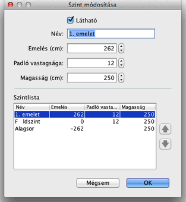

Módosíthatja a szint nevét, emelését és magasságát, valamitn a padlós vastagságát, ha duplán kattint a szintet jelzõ fülre, vagy az Alaprajz> Szint módosítása menüpontban.
A panelen módosíthatja a szintek tulajdonságait, ugyanakkor táblázatban láthatja az összes szintet. Az éppen szerkesztett szint eltérõ színnel meg van jelölve a táblázatban.

A padló vastagsága a 3D nézetben látható, például a padlóban található lukaknál (lépcsõ), illetve félemeleteknél és erkélyeknél.
A szint emelése lehet pozitív vagy negatív szám. Utóbbi esertben a talaj automatikusan "kiásódik" a 3D nézetben amikor a szintre bútort helyez el, vagy helyiséget határoz meg, vagy falakkal körbezárt területet határoz meg. Ezzel a funkcióval készíthet uszodát a földszinten, illetve egy- vagy többszintes pincét. |